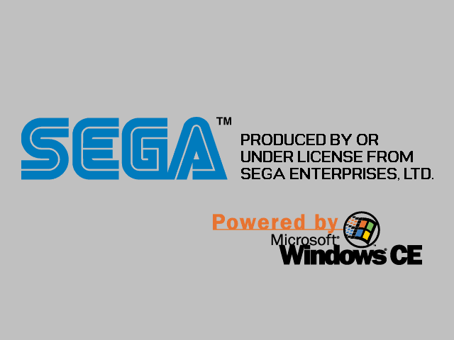
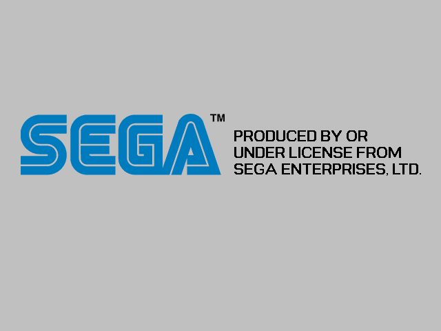
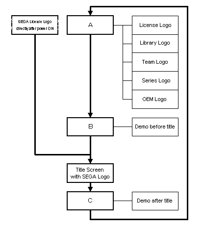

Dreamcast Software Development Standards/Ver. 2.00EU
5. Logos
Required: All Dreamcast logos must conform to the European Dreamcast Logo Style Guide
When power is turned on and after the Dreamcast logo (animation) is displayed, the Sega Logo (hard logo) appears. This is called the Sega License Logo, and logos that appear otherwise to indicate that an application is made by Sega are called Sega Logos, as follows.
"SEGA License Logo" or "Microsoft Logo" must be displayed.In the licensee brands' case, display of an application logo (equivalent to the Sega Logo for Sega) is optional. However, even in such cases,
5.1 Sega License Logo and Microsoft Logo display
"SEGA License Logo" and "Microsoft Logo" display cannot be cancelled.
Graphic data for these logos is stored in the file IP.bin on the disc.
Create IP.bin with the special tool "IP MAKER" provided by SEGA. Graphic data for logos is used by materials installed in "IP MAKER".
Whatever the method, using a changed "SEGA License Logo" or "Microsoft Logo" is prohibited.
5.1.1 Windows CE for Dreamcast (previously called Dragon OS) Development
Required: "SEGA License Logo display" is necessary immediately after power is switched on. Put both "SEGA License Logo" and "Microsoft Logo" on the official IP.bin on the disc to display them simultaneously.

(White is coded as C0.)
(It appears lighter when output to a TV screen.)
5.1.2 Non-Windows CE for Dreamcast (previously called Dragon OS) Development
Required: "SEGA License Logo display" is necessary immediately after power is switched on. Put "SEGA License Logo" on the official IP.bin on the disc to display only this logo.

Note: "SEGA Brand" shown hereafter indicates materials manufactured by SEGA or sold with permission from SEGA.
Required: (SEGA Brand only) For SEGA Brand applications, follow the rules in 5.2.1 or 5.2.2 to display the SEGA logo unless there is a license agreement with another company that does not regulate the display of its license with a contract document.
Displaying the "SEGA Logo" on the title screen must be done in principle. Follow the explanation in section 5.2.1.
However, in cases where displaying the SEGA logo on the title screen is difficult for reasons such as the business title was transferred without changes to the title screen, or for license agreement reasons, follow the rules in 5.2.2.
5.2.1 Displaying the SEGA logo on the Title Screen
Required: (SEGA Brand only): The SEGA logo is displayed following the rules below.
30pixel
60pixel
Or, 120x60 dots (for a 640x480 dot title screen) or larger.
60pixel
120pixel
Note: Unlike the Saturn version, the "Title Screen with SEGA Logo" should be displayed from the head of the first title loop (in other words, directly after the SEGA License logo). This must be done to clearly show the application copyright.
5.2.2 Displaying the SEGA Logo on Screens other than the Title Screen
Required: (SEGA Brand only) When the rules outlined in 5.2.1 are not applicable, the SEGA logo is displayed following the rules below.
30pixel
60pixel
Or, at least 120x60 dots (for a 640x480 dot title screen).
60pixel
120pixel
Unlike the Saturn version, the "SEGA Logo" should be displayed from the head of the first title loop (in other words, directly after the SEGA License logo). This must be done to clearly show the application copyright.Note:
5.3
Other Logos Display
In Development Standards, "Other Logos" are classified as those listed below. - License Logo Display
Standardised: professional
baseball team's logo, original logo, etc.
- Library Logo Display
Logo displayed according to a library licensing
agreement for Dreamcast.
Standardised: 25. License Acknowledgement when Using Libraries and
Patents
- Team Logo Display
Logo displaying the development team's name.
Standardised: Sonic Team Logo,
AM2 Logo, etc.
- Series Logo Display
Logo displayed in games of the same genre.
Standardised: SEGA Sports Logo,
Patch Logo, etc.
- OEM Logo Display
Logos of OEM companies, except for manufacture
and sales permit licensers.
Standardised: Logos of OEM
companies
Required: (SEGA Brand only) When display of another logo is required in an application that employed the rules in 5.2.1 Displaying the SEGA logo on the Title Screen, display it in the title loop after the "Title Screen with SEGA Logo" (in other words, at the head of the second round of the title loop).
The "Title Screen with SEGA Logo" is at the head of the title loop.
The order of demo and other logos depends on each application.
Example of title loop following rules of 5.2.1 Displaying the SEGA logo on the Title Screen

A represents "Other Logos". B represents "Demo before Title", and C represents "Demo after Title". Depending on whether the items in A, B, and C exist, the displaying order varies with each application.
In the pattern above, A is displayed after the title screen, but in cases where this order of logo display is not possible because of a license agreement, use the following pattern.
Required: (SEGA Brand only) When displaying another logo is required in applications that employed the rules in 5.2.2 Displaying the SEGA Logo on Screens other than the Title Screen, display it in the title loop after the "SEGA Logo screen".
The "Title Screen with SEGA Logo" is at the head of the title loop.
The order of demo and other logos depends on each application.
Example of a title loop following rules of 5.2.2 Displaying the SEGA Logo on Screens other than the Title Screen
A represents "Other Logos". B represents "Demo before Title", and C represents "Demo after Title". Depending on whether the items in A, B, and C exist, the displaying order varies with each application.
5.3.1 License Logo and Library Logo Display
Required: (SEGA Brand only) To display the license logo and library logo, please observe the rules outlined below.
(a) Follow the rules in the contract document regarding the content of logo display.
(b) The order of logo display and the possibility of skipping screens is defined in the terms of the contract document.
(c) To display the library logo, refer to 25. License Acknowledgement when Using Libraries and Patents
(d) When you need to display a license logo that is not regulated in the related contract document, we recommend you prepare a detailed display of the contents and bring it to the Legal Affairs Department for consultation to avoid possible problems of rights infringement.
5.3.2 Team Logo and Series Logo Display
Required: (SEGA Brand only) To display a team logo and series logo, observe the rules outlined below.
(a) When creating a team logo or series logo, obtain approval for its use and register the trademark.
(b) When using the logo, use only the logo in (a).
(c) When using the logo, attach detailed specs of the logo display for the parties involved and bring it to the Legal Affairs department. Obtain approval from the director in charge of the creation department.
(d)When displaying the logo, do not use the words "Presents", "Presented by" or "Produced by" together with the team or series logo to avoid complications of rights ownership.
5.3.3 OEM Logo Display (except manufacture and sales permit licensers)
Required: (SEGA Brands only) Please observe the rules outlined below to display OEM logos other than manufacture and sales permit licensers.
(a) When you want to display an OEM logo, the logo display content is regulated in the development contract document.
(b) If there is no above-mentioned regulation in the contract document, as a principle, any OEM logo display is disallowed.
(c) However, even with the conditions of (b), when absolutely necessary, logos can be displayed by attaching detailed specs of the logo display for the parties involved and bringing it to the Legal Affairs Department to obtain approval from the director in charge of the creation department.
(d) The Legal Affairs Department has set forth the following guidelines when (c) is assumed to lower the risk of rights infringements. Please observe these guidelines in the case of (c). Refer to the document the Legal Affairs Department has sent to each department for further details of their suggestions.
- The OEM company name is displayed in the main position, with the logo display in the secondary position.
- The OEM logo display area on the screen is smaller than the SEGA logo screen display area as defined in 5.2.2. There are no suggestions regarding display area when using the rules in 5.2.1, so check when applying for (c).
- Add "In co-operation with" to the display area of the OEM company name.


Copyright SEGA ENTERPRISES, LTD., 1998,1999 and Sega Europe 1999
{kind=link}